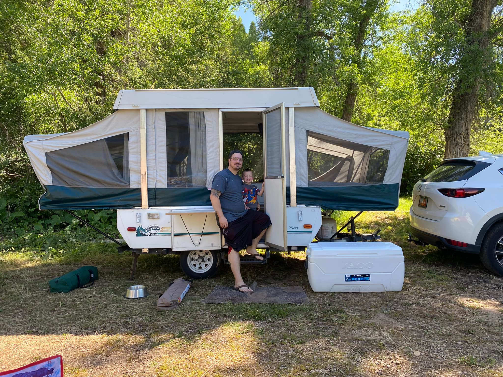

About Me:
Hi, I'm Austin! I am a student at Weber State Universtity studying computer science. I am a Utah native with a love for camping and fishing. Below you will find links to my favorite camping and fishing spots as well as a photo of my two boys!
| Interesting Fact | Description | Link |
|---|---|---|
| Geckos feet aren't sticky and instead act like mini magnets! | Geckos feet have thin hairs that borrow neutrons from the surface they are contacting through Van Der Waals forces | Gecko Feet |
| Light doesn't experience time. | "From the perspective of a photon, there is no such thing as time. It's emitted, and might exist for hundreds of trillions of years, but for the photon, there's zero time elapsed between when it's emitted and when it's absorbed again."" | Time and light |
| Your eyes have a blind spot | Where your optic nerve connects to your retina there aren't any light sensitive cells, meaning you are unable to process light in that spot! | Scotoma |